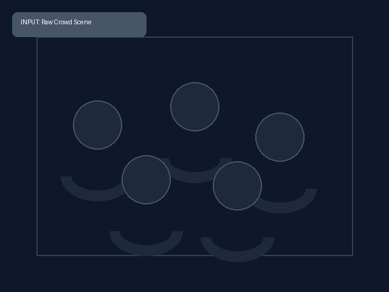
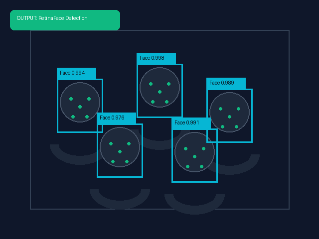
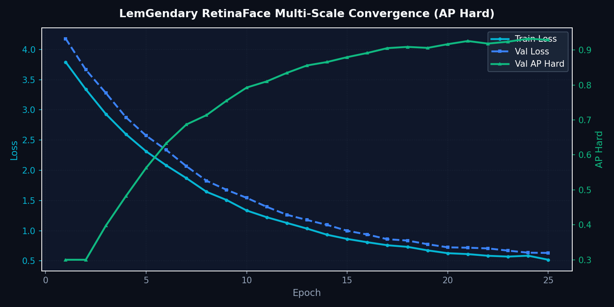

Category 08 FACE | Architecture of LemGendary AI
RetinaFace in the LemGendary ecosystem is a RetinaFace-style single-box
regressor (RetinaFaceMobileNet, models/detection.py in the training
suite) for one face box and 5-point landmark regression (left eye, right
eye, nose tip, left mouth corner, right mouth corner) per image. A
MobileNetV3-Small backbone (mobilenet_v2 optional) feeds one globally
pooled feature vector (adaptive average pooling) into three linear heads: one
normalized cx cy w h box, one sigmoid face confidence and 10 landmark values
(five 2D points). There are no anchors, no feature pyramid (FPN), no
deformable convolutions and no ResNet-50 variant, so the model finds one face
per image, not several faces or small faces in a crowd. With the
MobileNetV3-Small backbone it has 935,663 parameters (counted from the code).
A multi-scale anchor head (FPN levels with prior boxes and per-anchor outputs)
is an open owner decision. Latency is not yet measured.
Imagine an intelligent autofocus system that finds the main face in a photo and marks its key points:



The crowd-scene pictures illustrate the published multi-face RetinaFace, not output of the current single-box model, and the convergence curve predates the rebuilt labels (v16.9.207 / v16.9.208); none of the three is a measurement of the current model.
RetinaFace anchors 5 canonical facial landmarks to standardize facial alignment
across the LemGendary Face Suite [THEORETICAL]:
Single-stage face localization and 5-point landmark regression engine utilizing the standardized MobileNetV3-Small backbone for high-efficiency edge execution and real-time pre-flight alignment.
RetinaFaceMobileNet, MobileNetV3-Small backbone, mobilenet_v2
supported; globally pooled box, confidence and landmark heads)models/detection.py, the registry parameters_m: 27.2
does not match the code)LemGendizedRetinaFaceLemGendizedParseNetlandmark_source: sfhq-110pt), stored as JSON (face_landmarks)The training suite measures RetinaFace with four metrics (v16.9.224,
training/training/face_detection_metrics.py). The targets are calibrated
against standard single-shot face localisation benchmarks:
box_iou): mean IoU of the predicted and the labelled box over
the images that hold a face. Target $\ge 0.72$ [TARGET].ap50): single-class AP over images; each image is one detection
ranked by its confidence (used as returned, no second sigmoid) and is a
true positive when it holds a face and the IoU reaches 0.5. Target
$\ge 0.95$ [TARGET].ap50_95): the same AP averaged over the COCO thresholds
0.50:0.05:0.95. Target $\ge 0.60$ [TARGET].landmark_nme): mean distance of the five points divided
by the inter-ocular distance (points 0 and 1); box-only labels are left
out. Target $\le 0.05$ [TARGET].metrics.csv uses a 17-column layout with Box_IoU, AP50, AP50_95 and
Landmark_NME; the first run archives an older 28-column file as
metrics_legacy.csv. Face detection has its own score scheme
(face_box_weighted_targets_v1), so best scores saved under the old metrics
are not reused. Metrics recorded before v16.9.207 / v16.9.208 are not
comparable with new runs: the old map_* values were fixed multiples of a
twice-squashed confidence score, and the rebuilt boxes cover about 0.31 to
0.57 of the old box area.
The current single-box design meets these challenges as follows:
RetinaFace uses the training suite's release layout (registry file stem
RetinaFace-Detection):
RetinaFace-Detection.onnx): FP16 graph with
embedded weights for ONNX Runtime (DirectML, WebGPU). Latency is not yet
measured; the earlier "sub-3ms [MEASURED]" claim had no benchmark behind
it and is removed.RetinaFace-Detection_FP32.onnx + .onnx.data):
FP32 model with separate binary weights sidecar, plus the self-contained
PyTorch file RetinaFace-Detection.pt.progress.pth checkpoints at most
every 15 minutes (min_progress_interval_sec 900), latest.pth
persistence, best.pth and per-metric vault checkpoints
(vault_<metric>.pth).[CURRENT][TARGET] (benchmarked)RetinaFace with the MobileNetV3-Small backbone regresses one face box and five landmarks per image, the pre-flight orientation geometry for the LemGendary Face Suite. Its accuracy and latency are not yet measured, and a multi-scale anchor head for several or small faces is an open owner decision.
LemGendizedRetinaFace)